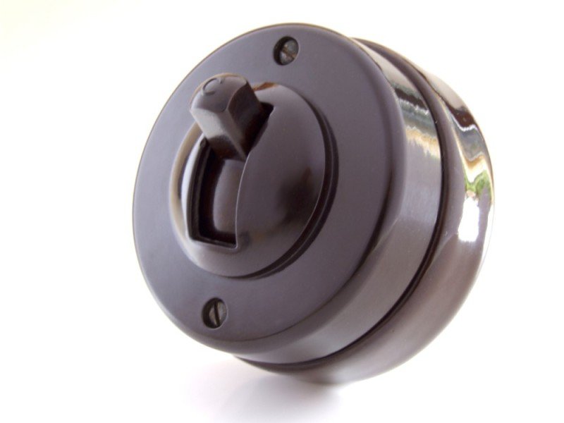
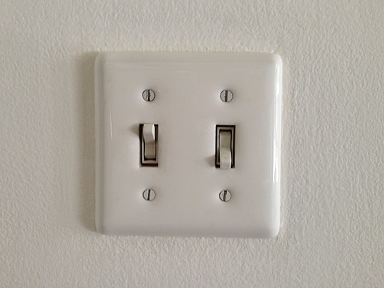

In the 1880's the earliest switches were utilized for strictly on and off purposes. The modern switches that can be purchased today can be used for several purposes other than just off and on. Some switches nowdays can adjust the brightness of lamps, regulating the fan speed, and adjusting the temperature of a refrigerator. Most switches were and are presently mounted to a wall and give a clicking sound, but with technology constantly transforming before our eyes it has enabled us to use touch or motion sensitive switches.
The first ever switch used on a mechanism is called ‘The quick break mechanism’. It was invented by John Henry Holmes in 1884. This mechanism is still used in many switches as it is still relevant and cost-friendly for the companies.
The toggle light switch was a groundbreaking invention that changed the definition of switches for the world. Invented by William J. Newton in 1917, it marked the beginning of light switches that we use today.
(An old toggle light switch)  (A modern toggle light switch) 